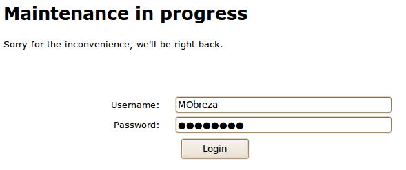
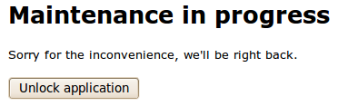

In some (very rare) cases, you may wish to block access to application for all users. Note: Other users with ROLE_ADMIN will still be able to use the application. For that reason, if user is not yet authenticated, the system will allow them to log in and so allow other Administrators to unlock the application.
 Lock message as displayed to users
While application is locked, only Administrators have access to the application and can also unlock.
When users try to access a blocked application, an Application locked message is displayed. Make sure you enter a descriptive enough message and who to contact in case they wish the application to be unlocked.
You can also pick from a set of predefined lock messages by clicking on one of them in the list provided below the form.
While application is blocked, Administrators will see a Access blocked in top right corner of the screen. Click the link to get to application lock status page and click Unlock application button.
 Administrators can unlock the application